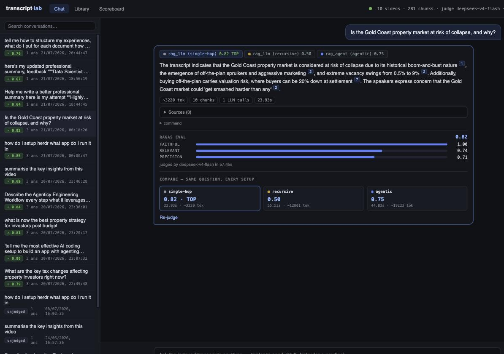
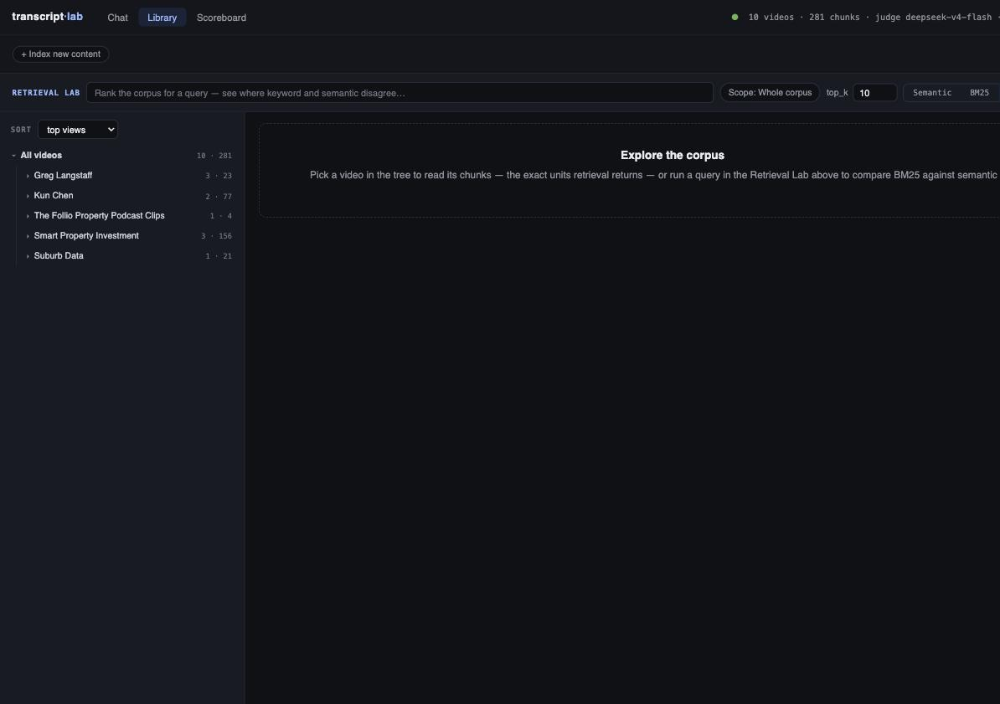
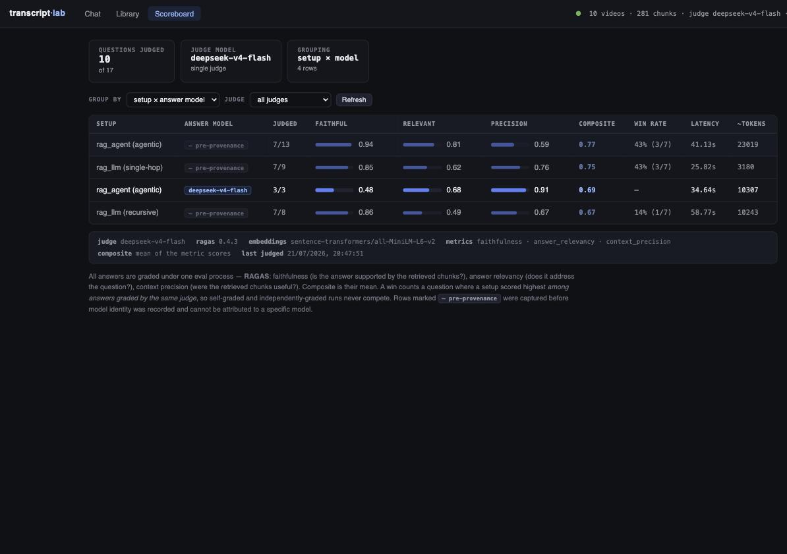

Review · every tab walked live + full code map
I ran the app (uv run python -m src.cli serve), walked the Chat, Library and Scoreboard tabs in the browser,
and mapped the React frontend, the retrieval/agent backend, and the RAGAS judge in the code. Every claim below carries a file reference.
Annotate anything you disagree with, and use the decision panels at the bottom to green-light work.

Chat. Strong bones: multi-setup answer tabs, inline citations, live agent trace, RAGAS bars, compare grid. Scope is a flat 10-video dropdown — no channel level Composer.tsx:90–107.

Library. Channel→video→chunk tree, Retrieval Lab (semantic vs BM25 side-by-side). The "+ Index new content" panel is a bare URL box; no corpus summary or insights anywhere.

Scoreboard. Solid aggregates + provenance bar. But the three scores are opaque — nothing shows how Faithful / Relevant / Precision were derived for any answer.
This is already an unusually good eval workbench — persisted contexts per answer, one shared history across CLI/web, provenance-aware scoreboard. The gaps are: scoping stops at video level, retrieval is semantic-only in the answer path (BM25 exists but is display-only src/api/ranking.py), no conversational memory, and the judge throws away every intermediate artifact that would explain its scores src/evals/judge.py:116–141.
Today the composer offers Whole corpus or one of 10 videos in a single flat <select>; the API accepts only a video
url src/api/main.py:72–80. Your corpus already spans 5 channels, and the Library tree already groups by
channel — Chat should too.
Why this needs a small backend change: chunk metadata carries only video_id — channel lives solely on
the raw_transcripts collection src/rag/storage.py:374. Three ways to bridge it:
Resolve channel → video_ids from raw-transcript metadata (already exposed per video by
src/api/corpus.py:55), then call the existing query_by_video_ids()
src/rag/storage.py:180. Add channel to AskRequest.
One-off script: Chroma's collection.update(ids, metadatas=…) stamps
channel_id/channel_name onto all 281 existing chunks without re-embedding; also add channel to
_chunk_metadata() for future ingests. Retrieval then uses a native where={"channel_id": …} filter — one query, clean.
Re-run index-rag for all 10 videos after extending chunk metadata. Simplest mental model, but
re-fetches transcripts and re-embeds 281 chunks for no additional benefit over Option 2.
The Instrument design system (frontend/src/theme.css) is coherent — polish means using data you already store, not a redesign:
thumbnail_url is already on every raw transcript src/rag/models.py:15.
Show them in the scope picker, the Sources list, and the Library tree. Instantly makes the corpus feel real.Ranked by payoff. The first two directly lift the RAGAS numbers you already track; the third makes Chat feel like a chat.
| # | Upgrade | Today | Proposal | Effort |
|---|---|---|---|---|
| 1 | Hybrid retrieval (RRF) precision ↑ | Answer path is semantic-only; BM25 exists but is display-only in the Retrieval Lab src/rag/bm25.py | Fuse semantic + BM25 with Reciprocal Rank Fusion inside the context provider; expose retrieval=semantic|hybrid per ask so the Scoreboard can A/B it under the same judge |
~1 day |
| 2 | Cross-encoder reranker precision ↑ | Chunks go to the LLM in raw vector-score order | Retrieve top-30, rerank to top-k with a local cross-encoder (ms-marco-MiniLM-L-6-v2 — same sentence-transformers stack as embeddings, no new API) |
~1 day |
| 3 | Conversational memory | Every ask is independent — history is a log, never fed to the LLM src/agents/rag_agent.py:299 | Condense-then-rewrite: summarize the active thread, rewrite follow-up questions into standalone retrieval queries, inject the condensed history into the answer prompt | ~2 days |
| 4 | Follow-up chips quick win | The LLM contract already returns proposed follow-up queries on every answer — the UI drops them src/agents/prompts.py:45 | Render them as tappable chips under the bubble; tapping asks with the same scope. Zero backend work | hours |
| 5 | Expose the S4 summary filter quick win | Transcript-summary pre-filtering works but is CLI-only — AskRequest can't reach it src/rag/context.py:92–110 |
Add a "smart-filter transcripts" toggle in ⚙ advanced; it's a boolean pass-through to the existing provider | hours |
| 6 | Citation coverage guard | Fallback regex maps [n] to chunks when the LLM forgets references src/agents/rag_transcript_agent.py:473 |
Flag answer sentences with no citation ("unsupported" underline) — pairs naturally with per-claim faithfulness in C1 | ~1 day |
flowchart LR
Q["question +\nthread context"] --> RW["query rewrite\n(memory-aware)"]
RW --> SCOPE["scope resolve\nchannel / video"]
SCOPE --> SEM["semantic top-30"]
SCOPE --> BM["BM25 top-30"]
SEM --> RRF["RRF fusion"]
BM --> RRF
RRF --> RE["cross-encoder\nrerank to top-k"]
RE --> AG["agent answer\n+ citations"]
AG --> J["RAGAS judge"]
style RW fill:#132339,stroke:#1f4a7a,color:#79b8ff
style SCOPE fill:#132339,stroke:#1f4a7a,color:#79b8ff
style BM fill:#132339,stroke:#1f4a7a,color:#79b8ff
style RRF fill:#132339,stroke:#1f4a7a,color:#79b8ff
style RE fill:#132339,stroke:#1f4a7a,color:#79b8ff
One-line label change in frontend/src/App.tsx:10–16 plus a hash-route alias so old
#library links keep working (#pipeline becomes canonical). The name also better matches what the tab already is:
ingest → chunks → retrieval comparison.
The tab currently opens with a bare tree. Give it a header strip computed from data /api/corpus already returns — numbers below are your real corpus:
Today it's a URL box and a button (frontend/src/library/IndexPanel.tsx) — you can't see what indexing actually does. (I read your "New Context" note as this panel; if you meant the chunk-detail context viewer, annotate here and I'll re-scope.) Make it a full-width panel that renders ingestion as the pipeline it is:
Backend note: POST /api/index currently shells out to the CLI and reports only at the end
src/api/main.py:482. Staged progress needs it to emit SSE events per pipeline stage — same pattern as
/api/ask already uses, and the ingestion steps are already discrete functions in src/rag/indexing.py.
The legacy rag_pipeline.html dashboard has a 2-D PCA "Chunk Space" scatter that never made it into the React app.
All primitives are in place: every chunk embedding is loadable src/dashboard/rag_pipeline.py:858, PCA projection is
implemented src/dashboard/chunk_space.py:39–52, and question-to-chunk kNN in the full 384-dim space exists
src/dashboard/chunk_space.py:70. What's new is chunk↔chunk edges and a React view.
New GET /api/chunk-graph?k=5: cosine kNN edges over the 281×384 matrix (trivial at this scale).
Force-directed layout, nodes colored by channel, sized by times-retrieved. Type a query → its retrieval neighborhood lights up, edges show why
neighboring chunks came along. This is the "explain retrieval" view.
Fastest: reuse projection.json, render an SVG scatter with channel colors and question overlay.
No edges — it shows clusters, not relationships. Caveat: PCA explains only 14%+5% of variance here, so distances mislead.
UMAP layout (better local structure than PCA) with kNN edges drawn on top, retrieval overlay as in option 1.
Most informative, adds a umap-learn dependency and layout tuning time.
| Upgrade | What & why | Where |
|---|---|---|
| Contextual chunk headers retrieval ↑ | Prepend channel · video title · timestamp window to each chunk's text before embedding (Anthropic "contextual retrieval" pattern).
Spoken-word chunks like "had. So, I'm going to just copy…" are near-meaningless to the embedder without it — this is the single biggest
retrieval-quality lever for transcript corpora. |
src/rag/chunking.py · storage.py |
| Chunk metadata enrichment | Add channel_id/name, title, upload_date to chunk metadata (Option 2 backfill from A1 covers it).
Unlocks native filters (channel, date range) and graph coloring. |
storage.py:374 |
| Neighbor expansion at synthesis | Retrieve precise small chunks, then hand the LLM each hit ±1 adjacent chunk (segment indices already stored). Cheap version of parent-document retrieval — fixes answers cut off mid-thought. | src/rag/context.py |
| Embedding upgrade path | MiniLM-L6 (384d, 2021-era) is the current ceiling. Benchmark bge-small-en-v1.5 / nomic-embed-text on your own judged questions —
the Scoreboard already records embedding_model per answer, so the A/B is free. |
config.py:148 |
| Index health check | Surface in the B2 strip: videos missing summaries (3 today), duplicate indexing, chunks never retrieved by any judged question. | src/api/corpus.py |
The judge wraps the real RAGAS 0.4.3 metrics src/evals/judge.py:54–114. Internally RAGAS produces per-claim verdicts with reasons, a generated question, and per-chunk verdicts — then the judge keeps only three floats and discards all of it judge.py:116–141. Two deliverables: an explainer (ship immediately) and a per-answer breakdown (needs persistence).
The judge LLM splits the answer into standalone claims, then NLI-checks each one against the retrieved chunks only.
The judge writes the question this answer would answer, embeds both, compares. Evasive answers score 0.
⚠ Currently computed from a single generated question (strictness=1
judge.py:89) — the noisiest possible setting; see C2.
One verdict per retrieved chunk: "was this useful in arriving at the answer?" — rank-weighted, so useful chunks buried low cost you.
flowchart TB
A["answer + stored contexts\n(chat_history.json)"] --> F["Faithfulness"]
A --> R["Answer relevancy"]
A --> P["Context precision"]
F --> F1["claims + per-claim\nverdict & reason"]
R --> R1["generated question\n+ noncommittal flag"]
P --> P1["per-chunk verdict\n& reason, in rank order"]
F1 --> S["3 floats + composite\n(all that survives today)"]
R1 --> S
P1 --> S
F1 -.persist.-> D["evaluation.details\n→ score-breakdown drawer"]
R1 -.persist.-> D
P1 -.persist.-> D
style F1 fill:#132339,stroke:#1f4a7a,color:#79b8ff
style R1 fill:#132339,stroke:#1f4a7a,color:#79b8ff
style P1 fill:#132339,stroke:#1f4a7a,color:#79b8ff
style D fill:#173a2b,stroke:#1f5937,color:#3fb950
evaluation.details (schema defaults to null so old history keeps loading — same pattern the codebase already uses for provenance fields).| Gap | Today | Fix |
|---|---|---|
| Self-grading judge bias | Judge defaults to the same DeepSeek model that wrote the answers judge.py:72; env override exists but nothing surfaces it | Make an independent judge the documented default; show a persistent "self-graded" warning badge in Chat + Scoreboard (the judge-filter machinery already exists) |
| Single-sample scoring noisy | strictness=1 because DeepSeek rejects n>1; one verdict per chunk, temperature 0 |
Loop k=3 independent calls per metric and report mean ± spread; show the spread as a whisker on score bars so 0.74 vs 0.76 stops looking meaningful |
| No recall, no correctness | All three metrics are reference-free — nothing measures what retrieval missed or whether the answer is right | Curate evals/golden.json (question, reference answer, expected chunk ids) for the 7 core questions → unlocks RAGAS context_recall + answer_correctness; add a Scoreboard toggle for referenced metrics |
| Agent-blind metrics | rag_agent burns 19k tokens vs single-hop's 3k for a lower composite on your Gold Coast question — no metric captures that | Efficiency panel: composite-per-1k-tokens, iterations vs score scatter, novel-chunks-per-iteration from the already-persisted agent trace |
| No regression story | Scores exist per entry; nothing compares configs over time | cli eval run: re-ask + re-judge the golden set against the current config, snapshot to a run file, diff view against the previous run — turns the workbench into a regression harness |
| Small-N confidence | Averages over ≤7 questions, win rates over 3 contests, presented without caveats | Show n everywhere scores aggregate; grey out comparisons where n < 5 rather than letting 1-question "wins" look decisive |
| Phase | Contents | Effort | Why this order |
|---|---|---|---|
| 1 · Quick wins | B1 rename · A1 channel/video linked scope · B2 corpus stat strip + insights · C1 metric explainer cards · A3-4 follow-up chips · A3-5 summary-filter toggle | 1–2 days | Every item of your feedback gets a visible first answer; nothing here blocks on anything |
| 2 · Transparency & ingest | C1 persist judge intermediates + breakdown drawer · B3 staged indexing panel with SSE + post-run insights · A2 thumbnails/channel colors | 3–4 days | The two "show me what's happening" features — judging and ingestion — share the SSE pattern already proven in /api/ask |
| 3 · Retrieval quality | A3-1 hybrid RRF · A3-2 reranker · B5 contextual chunk headers · A3-3 conversational memory | 4–6 days | Do these after Phase 2 so the improved judge can prove each change moved the numbers |
| 4 · Analysis & hardening | B4 chunk graph · C2 golden dataset + recall/correctness · C2 independent judge + multi-sample · C2 efficiency panel + regression runs | ~1 week | The graph and the regression harness are the payoff features once retrieval and judging are trustworthy |
n>1 — multi-sample judging must loop independent calls (slower, ~3× judge cost) rather than batch._chunk_metadata() change in the same PR so new ingests never regress.